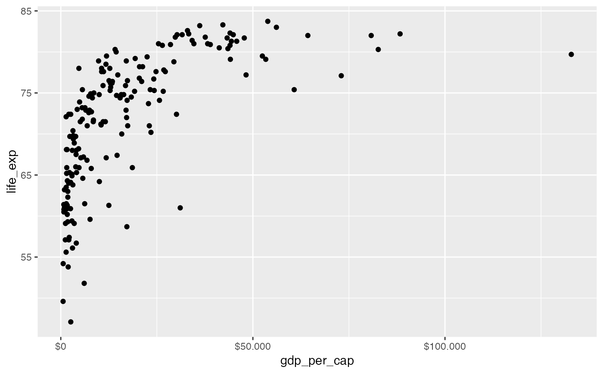
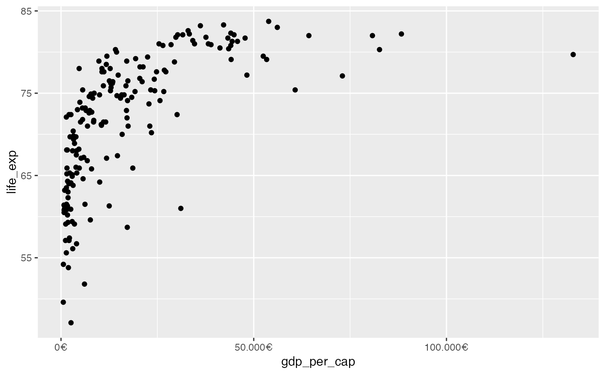

Label currencies (e.g. 2,5€, 50€ or $5,3, $100)
label_euro.RdFormat numbers as currencies
Usage
label_euro(
accuracy = NULL,
scale = 1,
big.mark = " ",
decimal.mark = ".",
prefix = "",
suffix = .euro,
trim = TRUE,
largest_with_cents = 1e+05,
negative_parens = FALSE,
...
)
euro(
x,
accuracy = 1,
scale = 1,
big.mark = " ",
decimal.mark = ".",
prefix = "",
suffix = .euro,
trim = TRUE,
largest_with_cents = 1e+05,
negative_parens = FALSE,
...
)
label_euro_de(
accuracy = 1,
scale = 1,
big.mark = ".",
decimal.mark = ",",
prefix = "",
suffix = .euro,
trim = TRUE,
largest_with_cents = 1e+05,
negative_parens = FALSE,
...
)
euro_de(
x,
accuracy = 1,
scale = 1,
big.mark = ".",
decimal.mark = ",",
prefix = "",
suffix = .euro,
trim = TRUE,
largest_with_cents = 1e+05,
negative_parens = FALSE,
...
)
label_dollar_de(
accuracy = 1,
scale = 1,
big.mark = ".",
decimal.mark = ",",
prefix = .dollar,
suffix = "",
trim = TRUE,
largest_with_cents = 1e+05,
negative_parens = FALSE,
...
)
dollar_de(
x,
accuracy = 1,
scale = 1,
big.mark = ".",
decimal.mark = ",",
prefix = .dollar,
suffix = "",
trim = TRUE,
largest_with_cents = 1e+05,
negative_parens = FALSE,
...
)Arguments
- accuracy, largest_with_cents
Number to round to. If
NULL, the default, values will be rounded to the nearest integer, unless any of the values has non-zero fractional component (e.g. cents) and the largest value is less thanlargest_with_centswhich by default is 100,000.- scale
A scaling factor:
xwill be multiplied byscalebefore formatting. This is useful if the underlying data is very small or very large.- big.mark
Character used between every 3 digits to separate thousands.
- decimal.mark
The character to be used to indicate the numeric decimal point.
- prefix, suffix
Symbols to display before and after value.
- trim
Logical, if
FALSE, values are right-justified to a common width (seebase::format()).- negative_parens
![[Deprecated]](figures/lifecycle-deprecated.svg) Use
Use
style_negative = "parens"instead.- ...
additional arguments passed to
label_dollar, etc.- x
a vector
Details
German wrapper around scales::label_dollar with default big.mark = "." and
decimal.mark = ",". For euro_de the prefix defaults to ""
and the suffix to the euro sign, for dollar_de the prefix defaults
to "$" and the suffix to "".
Examples
# ex-label_euro_de.R
set.seed(42)
x <- 100 * runif(10)
# Formatting numbers as currencies
euro_de(x)
#> Warning: The `negative_parens` argument of `dollar()` is deprecated as of scales 1.2.0.
#> ℹ Please use the `style_negative` argument instead.
#> ℹ The deprecated feature was likely used in the scales package.
#> Please report the issue at <https://github.com/r-lib/scales/issues>.
#> [1] "91€" "94€" "29€" "83€" "64€" "52€" "74€" "13€" "66€" "71€"
dollar_de(x, accuracy = .1)
#> [1] "$91,5" "$93,7" "$28,6" "$83,0" "$64,2" "$51,9" "$73,7" "$13,5" "$65,7"
#> [10] "$70,5"
# For other currencies or if you want to switch the position
# of the currency symbol switch the suffix and/or prefix
# Dollar symbol after number
euro_de(x, suffix = .dollar)
#> [1] "91$" "94$" "29$" "83$" "64$" "52$" "74$" "13$" "66$" "71$"
# British pound before number
dollar_de(x, prefix = .pound)
#> [1] "£91" "£94" "£29" "£83" "£64" "£52" "£74" "£13" "£66" "£71"
# For use as labeller e.g. with ggplot2
library(ggplot2)
p <- ggplot(gapminder15, aes(gdp_per_cap, life_exp)) +
geom_point()
# Dollar prefix
p +
scale_x_continuous(labels = label_dollar_de())

# Euro suffix
p +
scale_x_continuous(labels = label_euro_de())
